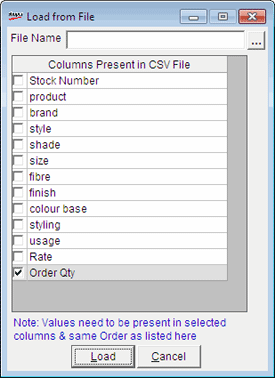

The Load from File window is as shown.

File Name: Enter the CSV file name with path from which data has to be imported. Alternatively, click  to browse the directory and select the file.
to browse the directory and select the file.
Columns Present in CSV File: Select the columns that have corresponding data present in the CSV file. The order of the fields, separated by comma, in the file should exactly match the display order, from top to bottom, of the respective fields selected here.
Note: If the details are loaded based on stock number, the rate and other active columns are filled from the master file.